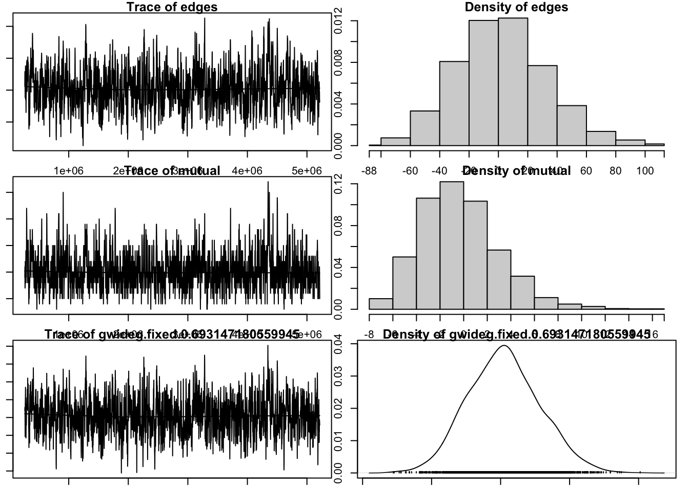
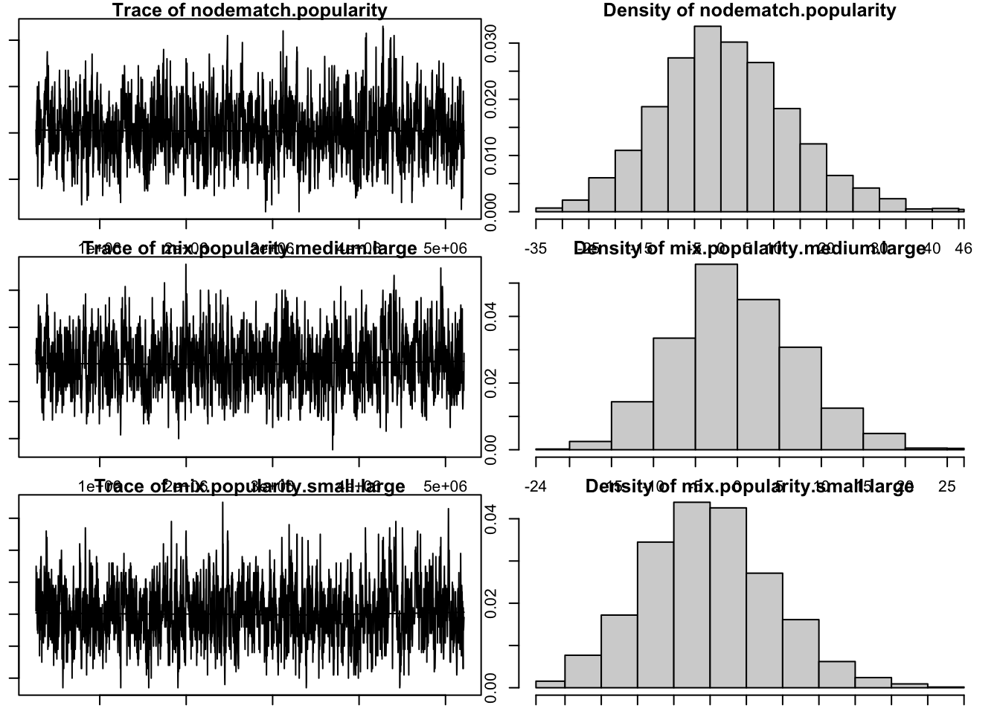
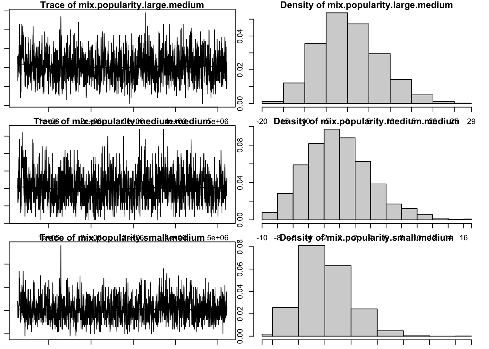
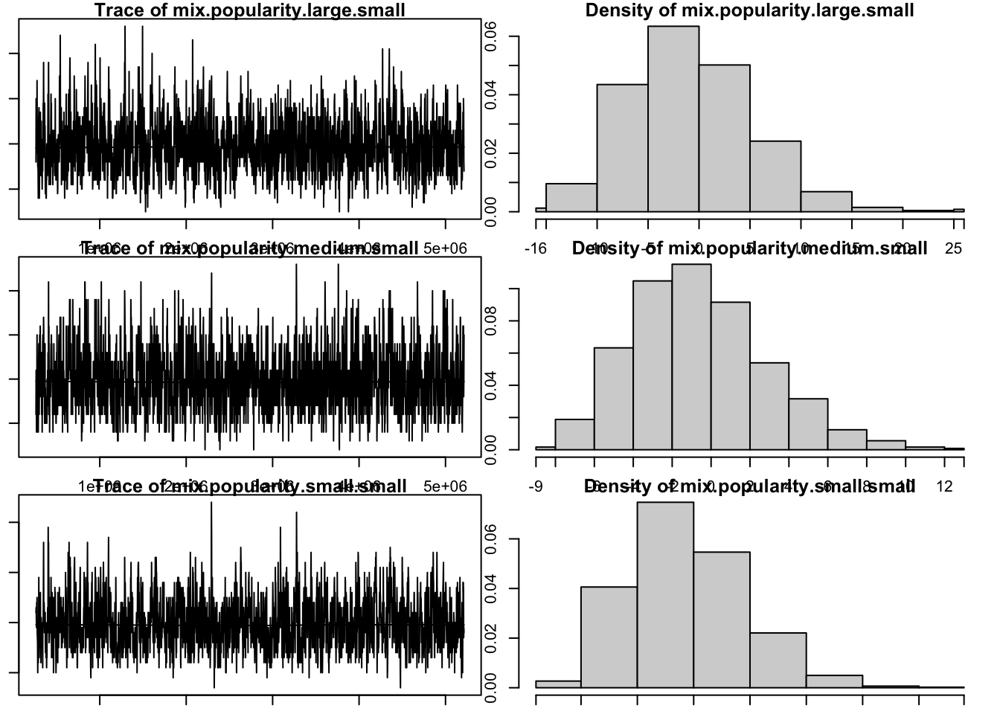
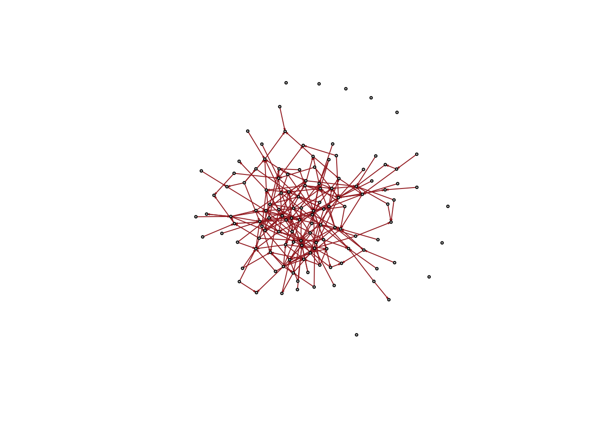
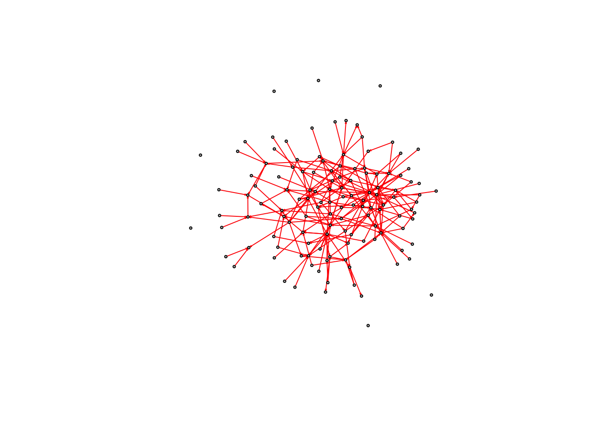

rm(list=ls())
# Clear your environment
rm(list=ls())
# Install packages below if you do not have them:
# -------------------------------------------------
if (!"statnet" %in% installed.packages()) install.packages("statnet") # For fitting ERGMs
if (!"igraph" %in% installed.packages()) install.packages("igraph") # For network plotting
if (!"texreg" %in% installed.packages()) install.packages("texreg") # For printing "nicer" model output
library(statnet)
library(readr)
list.files() # List the files in the current working directory to see if you're in the right directoryworldnews_ergm
Load packages
Load data
library(dplyr)
library(tidyverse)
# read hyperlink tsv file
hyperlink_large <- read_tsv("data/soc-redditHyperlinks-body.tsv") %>%
janitor::clean_names() %>%
select(source_subreddit, target_subreddit)
# read popularity csv file
popularity_large <- read_csv("data/subreddits_public.csv")
popularity_clean <- popularity_large %>%
mutate(subreddit_name = str_to_lower(subreddit_name))
# find all subreddits with "worldnews" as source or target
worldnews_1 <- hyperlink_large %>%
janitor::clean_names() %>%
filter(source_subreddit == "worldnews" | target_subreddit == "worldnews")
# 2 layer: find all links from subreddits related to "worldnews"
worldnews_2 <- hyperlink_large %>%
janitor::clean_names() %>%
filter(source_subreddit %in% worldnews_1$source_subreddit |
target_subreddit %in% worldnews_1$target_subreddit |
source_subreddit %in% worldnews_1$target_subreddit |
target_subreddit %in% worldnews_1$source_subreddit)
# count # of links <- take only n > 35
worldnews_3 <- worldnews_2 %>%
count(source_subreddit, target_subreddit) %>%
filter(n > 35)
# clean popularity file
popularity <- popularity_clean %>%
filter(subreddit_name %in% worldnews_3$source_subreddit |
subreddit_name %in% worldnews_3$target_subreddit) %>%
select(subreddit_name, subscribers_count) %>%
mutate(
subscribers_count = as.numeric(subscribers_count),
# categorical variable determining size of subreddit
size = case_when(
subscribers_count <= 10000 ~ "small",
subscribers_count <= 50000 ~ "medium",
subscribers_count > 50000 ~ "large"
),
# deal with NA values
size = size %>%
replace_na("missing")
) %>%
arrange(subreddit_name)make network
head(worldnews_3)
# Convert the edgelist to a network object in statnet format:
worldnews_net <- as.network.matrix(worldnews_3, matrix.type = "edgelist")
plot(worldnews_net)#
worldnews_net |>
network::set.vertex.attribute("size", value = popularity$size)
network::get.vertex.attribute(worldnews_net,"vertex.names")
network::get.vertex.attribute(worldnews_net,"size")make igraph object
library('igraph') # Ignore messages on any objects that are masked
Attaching package: 'igraph'The following objects are masked from 'package:lubridate':
%--%, unionThe following objects are masked from 'package:purrr':
compose, simplifyThe following object is masked from 'package:tidyr':
crossingThe following object is masked from 'package:tibble':
as_data_frameThe following objects are masked from 'package:dplyr':
as_data_frame, groups, unionThe following objects are masked from 'package:sna':
betweenness, bonpow, closeness, components, degree, dyad.census,
evcent, hierarchy, is.connected, neighborhood, triad.censusThe following objects are masked from 'package:network':
%c%, %s%, add.edges, add.vertices, delete.edges, delete.vertices,
get.edge.attribute, get.edges, get.vertex.attribute, is.bipartite,
is.directed, list.edge.attributes, list.vertex.attributes,
set.edge.attribute, set.vertex.attributeThe following objects are masked from 'package:stats':
decompose, spectrumThe following object is masked from 'package:base':
union# Set default plot options
igraph_options(vertex.size = 2, vertex.color = 'grey',
edge.color='gray80', edge.arrow.size=.1,
vertex.label = NA)
# make an igraph network object from statnet network object
worldnews_igraph <- graph.adjacency(as.matrix.network(worldnews_net)) Warning: `graph.adjacency()` was deprecated in igraph 2.0.0.
ℹ Please use `graph_from_adjacency_matrix()` instead.# set vertex attribute for size
worldnews_igraph <- set_vertex_attr(worldnews_igraph, "popularity", value = network::get.vertex.attribute(worldnews_net,"size"))
# count components
count_components(worldnews_igraph)[1] 39find giant component
reddit_comp <- igraph::components(worldnews_igraph)
giantGraph_worldnews <- worldnews_igraph %>%
induced_subgraph(., which(reddit_comp$membership == which.max(reddit_comp$csize)))
V(giantGraph_worldnews)$popularity_numeric <- as.numeric(factor(V(giantGraph_worldnews)$popularity, levels = c("missing", "small", "medium", "large")))
plot(giantGraph_worldnews, vertex.size = V(giantGraph_worldnews)$popularity_numeric, vertex.color = "lightblue", edge.color = "darkblue")
library(intergraph)
worldnews_giant <- asNetwork(giantGraph_worldnews)
worldnews_giant Network attributes:
vertices = 127
directed = TRUE
hyper = FALSE
loops = FALSE
multiple = FALSE
bipartite = FALSE
total edges= 204
missing edges= 0
non-missing edges= 204
Vertex attribute names:
popularity popularity_numeric vertex.names
No edge attributes# vcount(gpt_graph) ## the number of nodes/actors/users
# ecount(gpt_graph) ## the number of edgesergm summaries
library(statnet)
options(ergm.loglik.warn_dyads=FALSE)
# Look at Endogenous statistics: terms based on only ties in the advice network
summary(worldnews_giant ~ edges) # Number of edges (ties)edges
204 summary(worldnews_giant ~ mutual) # Number of pairs of reciprocated tiesmutual
7 summary(worldnews_giant ~ idegree(0:65)) # Indegree distribution. idegree0 idegree1 idegree2 idegree3 idegree4 idegree5 idegree6 idegree7
60 34 14 3 3 1 2 3
idegree8 idegree9 idegree10 idegree11 idegree12 idegree13 idegree14 idegree15
3 0 2 0 1 0 0 0
idegree16 idegree17 idegree18 idegree19 idegree20 idegree21 idegree22 idegree23
0 0 0 0 0 0 0 0
idegree24 idegree25 idegree26 idegree27 idegree28 idegree29 idegree30 idegree31
0 0 0 1 0 0 0 0
idegree32 idegree33 idegree34 idegree35 idegree36 idegree37 idegree38 idegree39
0 0 0 0 0 0 0 0
idegree40 idegree41 idegree42 idegree43 idegree44 idegree45 idegree46 idegree47
0 0 0 0 0 0 0 0
idegree48 idegree49 idegree50 idegree51 idegree52 idegree53 idegree54 idegree55
0 0 0 0 0 0 0 0
idegree56 idegree57 idegree58 idegree59 idegree60 idegree61 idegree62 idegree63
0 0 0 0 0 0 0 0
idegree64 idegree65
0 0 summary(worldnews_giant ~ gwodegree(log(2),fixed=T)) # One parameter summarizing outdegree distribution - tendency against outdegree hubsgwodeg.fixed.0.693147180559945
109.3723 summary(worldnews_giant ~ gwidegree(log(2),fixed=T)) # One parameters summarizing indegree distribution - tendency against indegree hubsgwideg.fixed.0.693147180559945
91.67529 summary(worldnews_giant ~ desp(1:5)) esp.OTP1 esp.OTP2 esp.OTP3 esp.OTP4 esp.OTP5
49 10 0 0 0 worldnews_giant Network attributes:
vertices = 127
directed = TRUE
hyper = FALSE
loops = FALSE
multiple = FALSE
bipartite = FALSE
total edges= 204
missing edges= 0
non-missing edges= 204
Vertex attribute names:
popularity popularity_numeric vertex.names
No edge attributes# remove missing
summary(worldnews_giant ~ nodematch("popularity", levels = -3, diff = TRUE)) nodematch.popularity.large nodematch.popularity.medium
47 10
nodematch.popularity.small
13 fit model 1
Hypothesis to consider
1. Subreddits have a tendency to form more ties than a random network
2. Subreddits are likely to have reciprocal ties
4. Subreddits have a tendency to form more ties based on subreddits with the same size.
# The following commands do model estimation for ERGMs.
# This may take a second. Text will print in-console to update you on progress in model estimation.
model1 <- ergm(worldnews_giant ~ edges
+ mutual
+ gwidegree(log(2),fixed=T)
#+ gwodegree(log(2),fixed=T)
+ nodematch("popularity", levels = -3)
+ nodemix("popularity", levels = -3)
, control = control.ergm(seed = 42)
, verbose = F
)Warning: 'glpk' selected as the solver, but package 'Rglpk' is not available;
falling back to 'lpSolveAPI'. This should be fine unless the sample size and/or
the number of parameters is very big.summary(model1)Call:
ergm(formula = worldnews_giant ~ edges + mutual + gwidegree(log(2),
fixed = T) + nodematch("popularity", levels = -3) + nodemix("popularity",
levels = -3), control = control.ergm(seed = 42), verbose = F)
Monte Carlo Maximum Likelihood Results:
Estimate Std. Error MCMC % z value Pr(>|z|)
edges -3.8475 0.9395 0 -4.095 <1e-04 ***
mutual 1.8079 0.4015 0 4.503 <1e-04 ***
gwideg.fixed.0.693147180559945 -3.1416 0.2179 0 -14.416 <1e-04 ***
nodematch.popularity 0.2878 0.9515 0 0.302 0.7623
mix.popularity.medium.large 1.0966 0.9498 0 1.155 0.2482
mix.popularity.small.large 1.0155 0.9465 0 1.073 0.2833
mix.popularity.large.medium 0.5352 0.9567 0 0.559 0.5758
mix.popularity.medium.medium 0.7089 0.3054 0 2.321 0.0203 *
mix.popularity.small.medium 0.7772 0.9726 0 0.799 0.4242
mix.popularity.large.small 0.2898 0.9570 0 0.303 0.7620
mix.popularity.medium.small 0.7287 0.9952 0 0.732 0.4640
mix.popularity.small.small 0.6207 0.2703 0 2.297 0.0216 *
---
Signif. codes: 0 '***' 0.001 '**' 0.01 '*' 0.05 '.' 0.1 ' ' 1
Null Deviance: 22183 on 16002 degrees of freedom
Residual Deviance: 1973 on 15990 degrees of freedom
AIC: 1997 BIC: 2090 (Smaller is better. MC Std. Err. = 0.5298)display results of model 1
library(texreg)Version: 1.39.4
Date: 2024-07-23
Author: Philip Leifeld (University of Manchester)
Consider submitting praise using the praise or praise_interactive functions.
Please cite the JSS article in your publications -- see citation("texreg").
Attaching package: 'texreg'The following object is masked from 'package:tidyr':
extractscreenreg(list("model1"=model1))
===========================================
model1
-------------------------------------------
edges -3.85 ***
(0.94)
mutual 1.81 ***
(0.40)
gwideg.fixed.0.693147180559945 -3.14 ***
(0.22)
nodematch.popularity 0.29
(0.95)
mix.popularity.medium.large 1.10
(0.95)
mix.popularity.small.large 1.02
(0.95)
mix.popularity.large.medium 0.54
(0.96)
mix.popularity.medium.medium 0.71 *
(0.31)
mix.popularity.small.medium 0.78
(0.97)
mix.popularity.large.small 0.29
(0.96)
mix.popularity.medium.small 0.73
(1.00)
mix.popularity.small.small 0.62 *
(0.27)
-------------------------------------------
AIC 1997.40
BIC 2089.57
Log Likelihood -986.70
===========================================
*** p < 0.001; ** p < 0.01; * p < 0.05.
par(mar=c(1,1,1,1))
mcmc.diagnostics(model1)



Sample statistics summary:
Iterations = 262144:5214208
Thinning interval = 2048
Number of chains = 1
Sample size per chain = 2419
1. Empirical mean and standard deviation for each variable,
plus standard error of the mean:
Mean SD Naive SE Time-series SE
edges 2.8425 31.260 0.63559 1.3701
mutual 0.1893 3.343 0.06796 0.1353
gwideg.fixed.0.693147180559945 0.9787 10.403 0.21152 0.3967
nodematch.popularity 1.3129 12.652 0.25723 0.4312
mix.popularity.medium.large 0.4618 7.330 0.14904 0.2903
mix.popularity.small.large 0.3245 8.915 0.18126 0.3458
mix.popularity.large.medium 0.7933 7.321 0.14884 0.2847
mix.popularity.medium.medium 0.2923 4.206 0.08552 0.1555
mix.popularity.small.medium 0.5349 4.700 0.09556 0.1661
mix.popularity.large.small -0.3853 6.076 0.12354 0.1964
mix.popularity.medium.small -0.1253 3.470 0.07056 0.1067
mix.popularity.small.small -0.1840 5.094 0.10357 0.1696
2. Quantiles for each variable:
2.5% 25% 50% 75% 97.5%
edges -54.55 -19.000 2.0000 23.00 69.55
mutual -5.00 -2.000 0.0000 2.00 8.00
gwideg.fixed.0.693147180559945 -18.47 -6.208 0.7539 7.93 22.10
nodematch.popularity -23.00 -7.000 1.0000 9.00 28.00
mix.popularity.medium.large -13.00 -5.000 0.0000 5.00 16.00
mix.popularity.small.large -16.00 -6.000 0.0000 6.00 19.00
mix.popularity.large.medium -12.00 -4.000 0.0000 6.00 16.55
mix.popularity.medium.medium -7.00 -3.000 0.0000 3.00 10.00
mix.popularity.small.medium -8.00 -3.000 0.0000 4.00 11.00
mix.popularity.large.small -11.00 -5.000 -1.0000 4.00 13.00
mix.popularity.medium.small -6.00 -3.000 0.0000 2.00 8.00
mix.popularity.small.small -9.00 -4.000 -1.0000 3.00 11.00
Are sample statistics significantly different from observed?
edges mutual gwideg.fixed.0.693147180559945
diff. 2.84249690 0.1893344 0.97868655
test stat. 2.07463165 1.3993117 2.46687380
P-val. 0.03802069 0.1617195 0.01362984
nodematch.popularity mix.popularity.medium.large
diff. 1.312939231 0.4617611
test stat. 3.044556461 1.5906045
P-val. 0.002330237 0.1116986
mix.popularity.small.large mix.popularity.large.medium
diff. 0.3245143 0.793303018
test stat. 0.9383870 2.786478714
P-val. 0.3480456 0.005328412
mix.popularity.medium.medium mix.popularity.small.medium
diff. 0.29226953 0.534931790
test stat. 1.87939602 3.221464734
P-val. 0.06019044 0.001275372
mix.popularity.large.small mix.popularity.medium.small
diff. -0.38528317 -0.1252584
test stat. -1.96163174 -1.1739006
P-val. 0.04980537 0.2404348
mix.popularity.small.small (Omni)
diff. -0.1839603 NA
test stat. -1.0845597 5.667926e+01
P-val. 0.2781167 1.605884e-07
Sample statistics cross-correlations:
edges mutual
edges 1.0000000 0.6489319
mutual 0.6489319 1.0000000
gwideg.fixed.0.693147180559945 0.8952983 0.5782435
nodematch.popularity 0.8345083 0.5311347
mix.popularity.medium.large 0.6417615 0.3667627
mix.popularity.small.large 0.6448618 0.3390122
mix.popularity.large.medium 0.5273952 0.4217712
mix.popularity.medium.medium 0.3965645 0.3220652
mix.popularity.small.medium 0.4519260 0.3216066
mix.popularity.large.small 0.4631141 0.3628889
mix.popularity.medium.small 0.3807307 0.2877042
mix.popularity.small.small 0.3735795 0.2790973
gwideg.fixed.0.693147180559945
edges 0.8952983
mutual 0.5782435
gwideg.fixed.0.693147180559945 1.0000000
nodematch.popularity 0.7489182
mix.popularity.medium.large 0.5629341
mix.popularity.small.large 0.5751627
mix.popularity.large.medium 0.4488108
mix.popularity.medium.medium 0.3405480
mix.popularity.small.medium 0.3802734
mix.popularity.large.small 0.4518128
mix.popularity.medium.small 0.3786237
mix.popularity.small.small 0.3738551
nodematch.popularity mix.popularity.medium.large
edges 0.8345083 0.64176150
mutual 0.5311347 0.36676274
gwideg.fixed.0.693147180559945 0.7489182 0.56293411
nodematch.popularity 1.0000000 0.45535950
mix.popularity.medium.large 0.4553595 1.00000000
mix.popularity.small.large 0.4593132 0.45901839
mix.popularity.large.medium 0.2701862 0.18725801
mix.popularity.medium.medium 0.3992066 0.11050081
mix.popularity.small.medium 0.2375511 0.12788413
mix.popularity.large.small 0.3107965 0.09787574
mix.popularity.medium.small 0.2637867 0.07685092
mix.popularity.small.small 0.4283205 0.04694628
mix.popularity.small.large
edges 0.64486178
mutual 0.33901221
gwideg.fixed.0.693147180559945 0.57516269
nodematch.popularity 0.45931322
mix.popularity.medium.large 0.45901839
mix.popularity.small.large 1.00000000
mix.popularity.large.medium 0.11637784
mix.popularity.medium.medium 0.07364952
mix.popularity.small.medium 0.06282207
mix.popularity.large.small 0.12032933
mix.popularity.medium.small 0.04041476
mix.popularity.small.small 0.02991103
mix.popularity.large.medium
edges 0.52739516
mutual 0.42177121
gwideg.fixed.0.693147180559945 0.44881081
nodematch.popularity 0.27018621
mix.popularity.medium.large 0.18725801
mix.popularity.small.large 0.11637784
mix.popularity.large.medium 1.00000000
mix.popularity.medium.medium 0.47482022
mix.popularity.small.medium 0.52222723
mix.popularity.large.small 0.08079365
mix.popularity.medium.small 0.09784590
mix.popularity.small.small 0.04357575
mix.popularity.medium.medium
edges 0.396564522
mutual 0.322065200
gwideg.fixed.0.693147180559945 0.340548011
nodematch.popularity 0.399206558
mix.popularity.medium.large 0.110500807
mix.popularity.small.large 0.073649519
mix.popularity.large.medium 0.474820222
mix.popularity.medium.medium 1.000000000
mix.popularity.small.medium 0.425771165
mix.popularity.large.small 0.029136384
mix.popularity.medium.small 0.052860141
mix.popularity.small.small 0.006178318
mix.popularity.small.medium
edges 0.45192602
mutual 0.32160662
gwideg.fixed.0.693147180559945 0.38027342
nodematch.popularity 0.23755114
mix.popularity.medium.large 0.12788413
mix.popularity.small.large 0.06282207
mix.popularity.large.medium 0.52222723
mix.popularity.medium.medium 0.42577116
mix.popularity.small.medium 1.00000000
mix.popularity.large.small 0.09858617
mix.popularity.medium.small 0.13370304
mix.popularity.small.small 0.07787249
mix.popularity.large.small
edges 0.46311413
mutual 0.36288894
gwideg.fixed.0.693147180559945 0.45181283
nodematch.popularity 0.31079652
mix.popularity.medium.large 0.09787574
mix.popularity.small.large 0.12032933
mix.popularity.large.medium 0.08079365
mix.popularity.medium.medium 0.02913638
mix.popularity.small.medium 0.09858617
mix.popularity.large.small 1.00000000
mix.popularity.medium.small 0.46113538
mix.popularity.small.small 0.54475965
mix.popularity.medium.small
edges 0.38073068
mutual 0.28770419
gwideg.fixed.0.693147180559945 0.37862369
nodematch.popularity 0.26378675
mix.popularity.medium.large 0.07685092
mix.popularity.small.large 0.04041476
mix.popularity.large.medium 0.09784590
mix.popularity.medium.medium 0.05286014
mix.popularity.small.medium 0.13370304
mix.popularity.large.small 0.46113538
mix.popularity.medium.small 1.00000000
mix.popularity.small.small 0.46231162
mix.popularity.small.small
edges 0.373579457
mutual 0.279097261
gwideg.fixed.0.693147180559945 0.373855060
nodematch.popularity 0.428320535
mix.popularity.medium.large 0.046946283
mix.popularity.small.large 0.029911025
mix.popularity.large.medium 0.043575750
mix.popularity.medium.medium 0.006178318
mix.popularity.small.medium 0.077872492
mix.popularity.large.small 0.544759646
mix.popularity.medium.small 0.462311616
mix.popularity.small.small 1.000000000
Sample statistics auto-correlation:
Chain 1
edges mutual gwideg.fixed.0.693147180559945
Lag 0 1.0000000 1.00000000 1.0000000
Lag 2048 0.6457059 0.55261727 0.5392758
Lag 4096 0.4310120 0.33070453 0.3465450
Lag 6144 0.2875622 0.21660562 0.2368473
Lag 8192 0.2017515 0.13880547 0.1441533
Lag 10240 0.1533857 0.08125816 0.1056923
nodematch.popularity mix.popularity.medium.large
Lag 0 1.00000000 1.0000000
Lag 2048 0.46600885 0.4460763
Lag 4096 0.29226834 0.2455424
Lag 6144 0.19161211 0.1868212
Lag 8192 0.11603960 0.1237269
Lag 10240 0.08904593 0.1142112
mix.popularity.small.large mix.popularity.large.medium
Lag 0 1.0000000 1.0000000
Lag 2048 0.4712149 0.4738488
Lag 4096 0.2736062 0.2545658
Lag 6144 0.1636232 0.1617832
Lag 8192 0.1353404 0.1230049
Lag 10240 0.1072861 0.1045440
mix.popularity.medium.medium mix.popularity.small.medium
Lag 0 1.00000000 1.00000000
Lag 2048 0.47570915 0.43964000
Lag 4096 0.28820879 0.20908618
Lag 6144 0.18273384 0.11220939
Lag 8192 0.12757121 0.09339547
Lag 10240 0.06137788 0.06648187
mix.popularity.large.small mix.popularity.medium.small
Lag 0 1.00000000 1.00000000
Lag 2048 0.38991378 0.32665581
Lag 4096 0.19571138 0.17279978
Lag 6144 0.09850550 0.09320789
Lag 8192 0.05363215 0.05155077
Lag 10240 0.04012014 0.06183133
mix.popularity.small.small
Lag 0 1.00000000
Lag 2048 0.45668629
Lag 4096 0.22696681
Lag 6144 0.12717797
Lag 8192 0.08018756
Lag 10240 0.06257697
Sample statistics burn-in diagnostic (Geweke):
Chain 1
Fraction in 1st window = 0.1
Fraction in 2nd window = 0.5
edges mutual
0.54424812 0.76147070
gwideg.fixed.0.693147180559945 nodematch.popularity
0.94815748 0.04294159
mix.popularity.medium.large mix.popularity.small.large
-0.56238016 0.23863642
mix.popularity.large.medium mix.popularity.medium.medium
2.12880008 1.00346030
mix.popularity.small.medium mix.popularity.large.small
0.91114827 0.10572436
mix.popularity.medium.small mix.popularity.small.small
0.23507627 0.33851751
Individual P-values (lower = worse):
edges mutual
0.5862707 0.4463760
gwideg.fixed.0.693147180559945 nodematch.popularity
0.3430493 0.9657481
mix.popularity.medium.large mix.popularity.small.large
0.5738570 0.8113875
mix.popularity.large.medium mix.popularity.medium.medium
0.0332708 0.3156388
mix.popularity.small.medium mix.popularity.large.small
0.3622173 0.9158011
mix.popularity.medium.small mix.popularity.small.small
0.8141495 0.7349732
Joint P-value (lower = worse): 0.04414965
Note: MCMC diagnostics shown here are from the last round of
simulation, prior to computation of final parameter estimates.
Because the final estimates are refinements of those used for this
simulation run, these diagnostics may understate model performance.
To directly assess the performance of the final model on in-model
statistics, please use the GOF command: gof(ergmFitObject,
GOF=~model).2. Perform Goodness of Fit test to check how well the estimated model captures certain statistical features of the observed network for both model 1 and 2. (10 pts)
- To do so, simulate many networks from the estimated model and extract 100 samples from the simulation process. Please note, this may take 2 minutes or more to compute.
sim1 <- simulate(model1, burnin=100000, interval=100000, nsim=100, verbose=T) # Uses the ergm model to simulate a null model
# Plot the first of the simulated networks
sim1_net1 <- igraph::graph.adjacency(as.matrix.network(sim1[[1]]))
igraph::plot.igraph(sim1_net1,edge.color="brown",
vertex.color = 'grey',edge.arrow.size=.1)
# Plot the 10th simulated network
sim1_net10 <- igraph::graph.adjacency(as.matrix.network(sim1[[10]]))
igraph::plot.igraph(sim1_net10,edge.color="red",
vertex.color = 'grey',edge.arrow.size=.1)
- Extract the number of triangles from each of the 100 samples.
# -------------------------------------------------------------------------------------------------
# Extract the number of triangles from each of the 100 samples and
# compare the distribution of triangles in the sampled networks with the observed network
# -------------------------------------------------------------------------------------------------
# Model 1:
model1.tridist <- sapply(1:100, function(x) summary(sim1[[x]] ~triangle)) # Extracts the triangle data from the simulated networks
hist(model1.tridist,xlim=c(0,1000),breaks=10) # Plots that triangle distribution as a histogram, change xlim to change the x-axis range if necessary
advice.tri <- summary(worldnews_net ~ triangle) # Stores the number of observed triangles
advice.tritriangle
71 arrows(advice.tri,20, advice.tri, 0.5, col="red", lwd=3) # Adds an arrow to the plotted histogram
c(obs=advice.tri,mean=mean(model1.tridist),sd=sd(model1.tridist),
tstat=abs(mean(model1.tridist)-advice.tri)/sd(model1.tridist)) obs.triangle mean sd tstat.triangle
71.000000 14.080000 7.619327 7.470476 - Compare the distribution of triangles in the sampled networks with the observed network by generating a histogram of the triangles. Interpret your result – is the estimated model a good one in terms of triangle measure?
The histogram of triangles shows that model 1 does not have that good of a fit for triangle measure because our observed model does not land in the distribution of random sampled networks. The t-stat is 6.784396 which is a bad fit. The boxplot created from the code below for edgewise shared partners also shows that the observed network does not align well with the other generated networks. This GOF calculation shows us that the goodness of fit for edgewise shared partners have an average low p-value (some values are 0), which we can use to conclude that model 1 is not good to measure triangles in the network. However, for the histogram of model 2, our observed network fits inside of the distribution which indicates that it is a good model in terms of triangle measure. Here, the t-stat is 0.2754067, which is between 0.1 and 1, signifying a good fit. Additionally the p-values for edgewise shared partners are also high and the distribution boxplot for edgewise shared partners matches mostly well with the observed data, indicating that the goodness of fit is good for model 2.
# -------------------------------------------------------------------------------------------------
# Test the goodness of fit of the model
# Compiles statistics for these simulations as well as the observed network, and calculates p-values
# -------------------------------------------------------------------------------------------------
# Model 1:
# It may take a second for this command to run.
gof1 <- gof(model1, verbose=T, burnin=1e+5, interval=1e+5, control = control.gof.ergm(nsim = 200))
# If you run below and then wouldn't see the plot, try par(mar=c(2,2,2,2))
dev.off() # Clear any other plots from the plot windownull device
1 plot(gof1) # Plot the goodness of fit
# Note: This should produce five separate plots that you should look through.
# In RStudio, scroll between the plots using the arrow buttons
gof1 # Display the goodness of fit info in the console
Goodness-of-fit for in-degree
obs min mean max MC p-value
idegree0 60 50 68.970 86 0.15
idegree1 34 9 16.295 30 0.00
idegree2 14 3 9.145 17 0.13
idegree3 3 1 7.615 15 0.14
idegree4 3 2 6.795 16 0.20
idegree5 1 2 5.710 14 0.00
idegree6 2 1 4.755 14 0.31
idegree7 3 0 3.410 9 1.00
idegree8 3 0 2.195 7 0.77
idegree9 0 0 1.095 6 0.66
idegree10 2 0 0.575 4 0.26
idegree11 0 0 0.275 3 1.00
idegree12 1 0 0.110 1 0.22
idegree13 0 0 0.030 1 1.00
idegree14 0 0 0.010 1 1.00
idegree15 0 0 0.010 1 1.00
idegree16 0 0 0.005 1 1.00
idegree27 1 0 0.000 0 0.00
Goodness-of-fit for out-degree
obs min mean max MC p-value
odegree0 42 15 28.250 50 0.06
odegree1 54 26 39.890 58 0.03
odegree2 10 18 30.810 44 0.00
odegree3 3 6 16.275 30 0.00
odegree4 4 1 7.345 19 0.39
odegree5 4 0 3.025 11 0.71
odegree6 3 0 0.970 7 0.18
odegree7 0 0 0.340 3 1.00
odegree8 4 0 0.070 3 0.00
odegree9 0 0 0.020 1 1.00
odegree10 1 0 0.005 1 0.01
odegree12 1 0 0.000 0 0.00
odegree13 1 0 0.000 0 0.00
Goodness-of-fit for edgewise shared partner
obs min mean max MC p-value
esp.OTP0 145 134 191.545 274 0.06
esp.OTP1 49 0 11.730 30 0.00
esp.OTP2 10 0 0.540 4 0.00
esp.OTP3 0 0 0.010 1 1.00
esp.OTP4 0 0 0.005 1 1.00
Goodness-of-fit for minimum geodesic distance
obs min mean max MC p-value
1 204 137 203.830 305 0.92
2 344 146 332.750 674 0.83
3 108 121 471.075 1092 0.00
4 7 59 541.325 1276 0.00
5 0 25 499.370 1255 0.00
6 0 11 386.130 999 0.00
7 0 2 261.845 724 0.00
8 0 0 164.335 508 0.03
9 0 0 97.585 324 0.08
10 0 0 56.895 255 0.21
11 0 0 32.280 191 0.34
12 0 0 17.955 178 0.75
13 0 0 10.165 158 1.00
14 0 0 5.435 114 1.00
15 0 0 3.005 105 1.00
16 0 0 1.680 110 1.00
17 0 0 1.005 99 1.00
18 0 0 0.635 82 1.00
19 0 0 0.475 74 1.00
20 0 0 0.380 76 1.00
21 0 0 0.285 57 1.00
22 0 0 0.125 25 1.00
23 0 0 0.085 17 1.00
24 0 0 0.060 12 1.00
25 0 0 0.015 3 1.00
Inf 15339 9536 12913.275 15440 0.02
Goodness-of-fit for model statistics
obs min mean max
edges 204.00000 137.00000 203.83000 305.0000
mutual 7.00000 0.00000 7.10000 20.0000
gwideg.fixed.0.693147180559945 91.67529 66.76514 91.85774 118.4404
nodematch.popularity 70.00000 44.00000 70.01500 100.0000
mix.popularity.medium.large 32.00000 14.00000 31.71500 56.0000
mix.popularity.small.large 42.00000 25.00000 41.99500 65.0000
mix.popularity.large.medium 22.00000 8.00000 21.47500 42.0000
mix.popularity.medium.medium 10.00000 1.00000 9.54000 21.0000
mix.popularity.small.medium 12.00000 2.00000 11.90000 31.0000
mix.popularity.large.small 17.00000 7.00000 17.39000 36.0000
mix.popularity.medium.small 8.00000 1.00000 8.23000 18.0000
mix.popularity.small.small 13.00000 4.00000 13.70500 35.0000
MC p-value
edges 0.92
mutual 1.00
gwideg.fixed.0.693147180559945 0.97
nodematch.popularity 0.99
mix.popularity.medium.large 0.93
mix.popularity.small.large 0.96
mix.popularity.large.medium 0.88
mix.popularity.medium.medium 0.92
mix.popularity.small.medium 1.00
mix.popularity.large.small 1.00
mix.popularity.medium.small 1.00
mix.popularity.small.small 1.00Endogenous Effects (Effects of the ties being predicted on other predicted ties)
● edges: number of edges in the network
● mutual: number of reciprocal edges in the network
● gwidegree: Geometrically Weighted Indegree. This term measures a tendency against indegree preferential attachment. (Negative coefficients show indegree preferential attachment – Incoming ties are more likely to be directed towards nodes that already have other incoming ties.)
● gwodegree: Directed Geometrically Weighted Outdegree. This term measures a tendency against outdegree preferential attachment. (Negative coefficients show outdegree preferential attachment – Outgoing ties are more likely to originate from nodes that already have other outgoing ties)
● dgwesp, of type “OTP”: Directed Geometrically Weighted Edgewise Shared Partners Number of edges that belong to certain types of triangles. “Edgewise” refers to the fact that we require a tie to exist between nodes i and j, and then measure the number of “shared partners” between them. Shared partners are nodes that have a certain relationship between i and j. In this case, we are looking at the Outgoing Two Path (“OTP”) relationships. This is one way to operationalize transitivity. The “geometrically weighted” refers to the fact that we will use a weight parameter,, to add diminishing returns to the number of shared partners (i.e., the second shared partner between two nodes will have less effect on the likelihood of a network than the first shared partner, the third will have even less of an effect, and so on).
Yes, geometrically weighted terms (gwidegree, gwodegree, dgwesp) are very complicated. Essentially, the “geometric weighted” part is saying that effects on network probability have diminishing returns for nodes as degree or the number of shared partners gets higher and higher. This helps avoid model fits where all the ties are directed towards one node. For the purposes of this class, you can ignore the technical details and just focus on interpreting them in terms of “preferential attachment” or “transitivity” effects.
Exogenous Effects (Effects of node attributes or variables outside the predicted ties)
● nodeicov: covariance between in-degree of nodes and attributes of nodes
● nodeocov: covariance between out-degree of nodes and attributes of nodes
● diff: differences between nodes on some numeric attribute (ex. tenure, age). The way we have it specified in the code, diff scores are is calculated as the attribute value of the sending node (attbi) minus value of the receiving node (attbj). (Heterophily/ anti-homophily on continuous variables).
● nodematch: tendency of nodes to form ties with those of matching values (Homophily on categorical variables)
● nodemix: mixing matrix of all different combinations of node attributes (ex. A -> A ties, A-> B ties, B -> A ties, B -> B ties). To avoid model overspecification, we need to leave one of these cells out of the model. The weights (effect sizes) estimated for all of the terms we leave in the model then represent the effect of a combination relative to the effect that we left out.
● edgecov: covariance between edges of two networks (the presence/strength of a tie in an outside network on whether a tie exists in our dependent variable network – Advice)